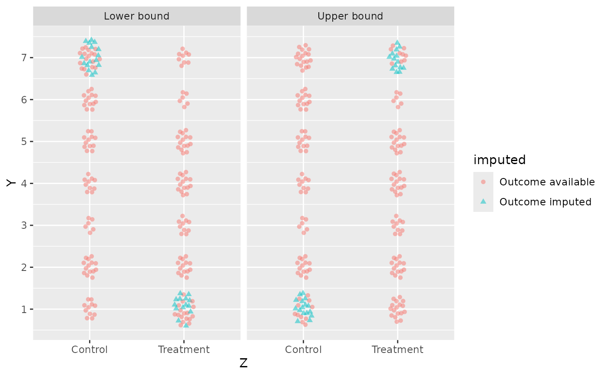

Impute the extreme value bounds for an outcome with attrition
impute_extreme_values.RdAttrition is missingness in the outcome variable. Dropping the units whose outcome is missing conditions the analysis on a post-treatment variable and can induce bias. Extreme value bounds (Manski, 1999) sidestep the problem by imputing the logical best case and worst case instead: the upper bound imputes the largest possible outcome for missing treated units and the smallest possible outcome for missing control units, and the lower bound does the reverse.
Arguments
- data
A data frame containing the outcome and the assignment.
- outcome
The name of the outcome column, as a string. The column must be numeric, and missing values are what gets imputed.
- assignment
The name of the random assignment column, as a string. It must have exactly two distinct values and no missing values.
- range
The logical minimum and maximum of the outcome, as a numeric vector of length two. For a seven-point Likert item,
c(1, 7).- treated
The value of
assignmentthat denotes the treated group. Defaults to the second value in sort order, which is"Treatment"forc("Control", "Treatment")and1forc(0, 1). Set it explicitly when sort order does not pick out the treated group.
Value
A data frame with twice as many rows as data, holding both
scenarios stacked. The outcome column carries the imputed values, and two
columns are added: scenario, a factor with levels "Lower bound" and
"Upper bound", suitable for faceting; and imputed, a factor with levels
"Outcome available" and "Outcome imputed", suitable for mapping to both
colour and shape so the distinction survives in grayscale.
Details
This function does the imputation only, so that the two scenarios can be
plotted alongside the observed data. It estimates nothing. For the bounds
themselves and their uncertainty, see estimator_ev() in the 'attrition'
package.
range has no default. The logical minimum and maximum of the outcome are
the substantive input the bounds rest on, so they are stated at the call
site rather than guessed from the observed data. Guessing would silently
narrow the bounds whenever no respondent used an endpoint of the scale.
References
Manski, C. F. (1999). Identification Problems in the Social Sciences. Harvard University Press.
Examples
library(ggplot2)
dat <- data.frame(
Z = rep(c("Control", "Treatment"), each = 100),
Y = c(sample(1:7, 100, replace = TRUE), sample(1:7, 100, replace = TRUE))
)
dat$Y[sample(200, 30)] <- NA
bounded <- impute_extreme_values(dat, "Y", "Z", range = c(1, 7))
ggplot(bounded, aes(Z, Y, colour = imputed, shape = imputed)) +
geom_point(position = position_sunflower(density = 30, aspect_ratio = 1 / 4),
alpha = 0.5) +
facet_wrap(~ scenario) +
scale_y_continuous(breaks = 1:7)
